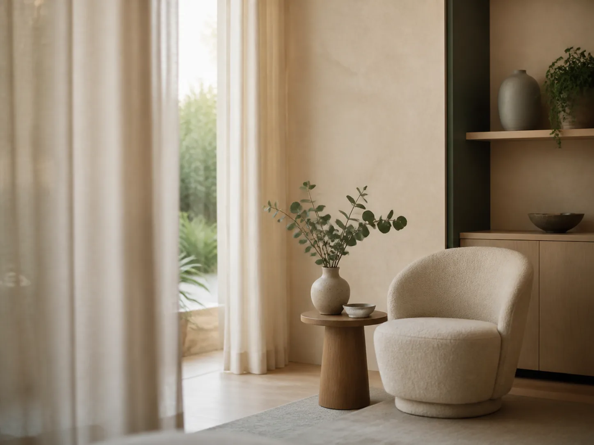
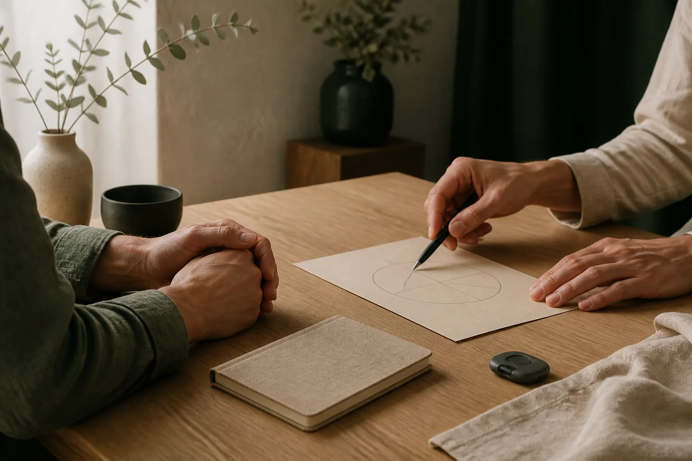

Získejte přehled
Podívejte se na vybrané ukazatele vitality a tělesné kondice srozumitelně a bez zbytečného žargonu.
Wellness program pro tělo i mysl
Orientační měření stresu, regenerace a tělesné kondice doplněné osobní interpretací a individuálním doporučením.
Wellness a orientační služba. Nenahrazuje lékařské vyšetření.

Více než čísla
VitalityScan kombinuje několik orientačních měření s časem na rozhovor. Pomůže vám vidět souvislosti mezi životním stylem, stresem, regenerací a vaší pohodou.
Podívejte se na vybrané ukazatele vitality a tělesné kondice srozumitelně a bez zbytečného žargonu.
Naměřené hodnoty společně zasadíme do kontextu vašeho běžného dne, zátěže a regenerace.
Odnesete si praktické podněty, které mohou podpořit udržitelnější péči o váš životní styl.
Jak návštěva probíhá
Rozsah měření vždy odpovídá zvolenému programu a individuálnímu posouzení vhodnosti.
Vaše potřeby, očekávání a relevantní informace.
Podle zvoleného programu a vhodnosti.
Srozumitelně vysvětlíme hodnoty a souvislosti.
Praktické podněty pro další péči o sebe.
Technologie
Přístroje poskytují orientační údaje. Hlavní hodnotou VitalityScanu je jejich osobní interpretace v širších souvislostech.
Stres a regenerace
Orientační měření variability srdečního tepu (HRV), která souvisí s činností autonomního nervového systému.
Tělesná kompozice
Orientační pohled na složení těla, například podíl tuku, svalové hmoty a vody podle použitého zařízení.
Krevní tlak
Měření krevního tlaku jako další dílek celkového orientačního pohledu na vaši aktuální kondici.
Konkrétní modely, rozsah ukazatelů a omezení použití budou před zveřejněním ověřeny podle dokumentace výrobců.

Programy a ceník
Každá návštěva zahrnuje osobní čas, interpretaci a doporučení. Ceny a podmínky čekají před spuštěním na finální potvrzení.
Basic
690 Kč
cca 30 minut
Nejžádanější
Standard
1 290 Kč
45 minut
Premium
1 990 Kč
60 minut
Rozsah Premium a podmínky kontroly čekají na odborné a právní ověření.
Kde měříme
Vyberte si místo, které vám nejlépe vyhovuje. Konkrétní dostupnost a přesný termín společně potvrdíme při objednání.
Skalná
Česká ulice, Skalná
Navštívit webKarlovy Vary
Vítězná ulice, Karlovy Vary
Navštívit webDalší místa
Konkrétní adresu a možnost měření vám potvrdíme při domluvě termínu.
Příprava a bezpečnost
Pro co nejpřesnější orientační výsledky doporučujeme přibližně dvě hodiny před návštěvou nejíst, nepít kávu ani energetické nápoje a vynechat náročnou fyzickou aktivitu.
Finální instrukce vždy obdržíte po domluvení termínu.
Vhodnost jednotlivých částí programu se posuzuje individuálně.
Důležité upozornění VitalityScan je wellness a orientační služba. Nenahrazuje lékařské vyšetření, diagnózu ani léčbu. Při zdravotních obtížích se obraťte na lékaře.
O poskytovatelce
„Člověk pro mě není jen číslo. Je to celek s vlastním tělem, myslí a životním příběhem.“
Ve své práci propojuje zdravotnické vzdělání, zkušenosti a individuální přístup. Klientům nabízí bezpečný prostor k porozumění souvislostem a podporu při hledání udržitelných změn.
Od dětství se věnuje potápění. Klid, trpělivost a vnímání dechu, které se naučila pod hladinou, přenáší i do péče o klienty.
Vymezení role: Nejsem lékařka. Jsem průvodkyně při podpoře klienta na cestě ke zdravějšímu životnímu stylu.
Titul, kvalifikace a profesní zkušenosti musí být před publikací doloženy a schváleny.
Časté otázky
Nenašli jste odpověď? Ozvěte se a vše společně probereme před objednáním.
Přejít k objednání →Orientační přehled o vybraných ukazatelích, osobní vysvětlení souvislostí a praktické podněty pro péči o životní styl.
Běžné části měření jsou rychlé a obecně bezbolestné. Přesný rozsah vždy závisí na zvoleném programu a posouzení vhodnosti.
Přibližně dvě hodiny před termínem doporučujeme nejíst, nepít kávu ani energetické nápoje a vynechat náročnou fyzickou aktivitu.
Ne. Jde o wellness a orientační službu, která nenahrazuje lékařské vyšetření, diagnózu ani léčbu.
Zejména implantované elektronické zařízení, těhotenství, závažné srdeční onemocnění, cukrovku, léky na ředění krve a relevantní alergie.
Objednání
Vyberte program a zanechte nám kontakt. Po propojení formulářové služby se vám ozveme s nabídkou termínu a přesnými instrukcemi.